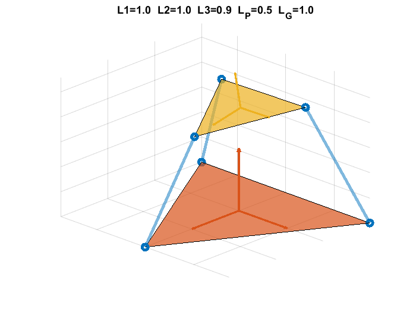
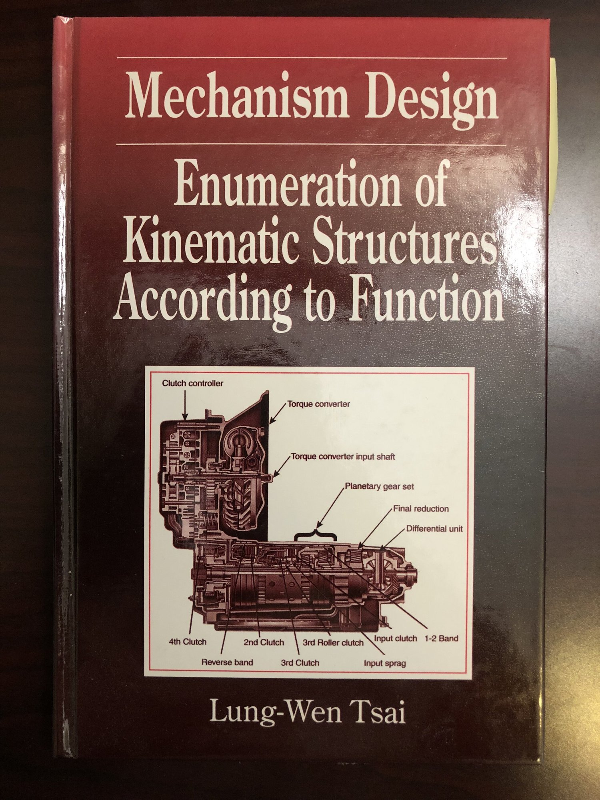

3-UPU Kinematics

Once in a ME551 discussion, Prof. Kota handed me Ferdinand Freudenstein’s paper: “The creation of mechanisms according to kinematic structure and function”. I was very interested. It reminded me of something I saw in Shanghai Library several years ago. Prof. Kota was very happy, he later borrowed me a book out his shelf: Lung-Wen Tsai’s “Mechanism Design: Enumeration of Kinematic Structures According to Function”. He said: “you don’t need to feel bad if you cannot understand it now.” He was right. I could not understand his graph language. I needed to learn some graph theory.

I could not understand their graph language, but I kept in mind one thing: as he admitted it himself, there were many exception to Freudenstein’s general degree-of-freedom formula. I also came up with several basic counter-examples. I printed them out and went to Prof. Kota’s office. I said:
“I am not exactly sure, but I feel like the degree of freedom is like the dimension of the kernel of a matrix. A n-by-n matrix doesn’t necessarily have a emptyset as its kernel. I think maybe certain form of linear algebra can be used to more precisely describe the degree-of-freedom without exception. I don’t know whether Lung-Wen Tsai does it in his book. I cannot yet understand his mathematical language.”
Prof. Kota was very interested that I would be so interested in kinematics. He recommended me some papers on Stewart’s platform: “it would be a good exercise if you can figure out the forward kinematics of such platform.” So, I synthesized a 3-UPU mechanism. Then COVID-19 outbroke, I could not visit Prof. Kota’s office anymore.
I was basically locked inside my dorm. I found some literature about parallel machines (Zhen Huang’s “Theory of Parallel Mechanisms” e.g.), but they were written in the language of screw theory. I felt that screw theory was very close to linear algebra, and it might better predict degree of freedom than general degree-of-freedom formula. So, I looked into Ettore Minguzzi’s “A geometrical introduction to screw theory”. My math was too poor. I really need to take more math.
I ended up using the transformation matrix taught in my aircraft dynamic course to formulate the 3-UPU forward kinematics, and had MATLAB solving it numerically for me. The result was in this file.
Acknowledgement:
Advised by UMich Prof. Sridhar Kota.